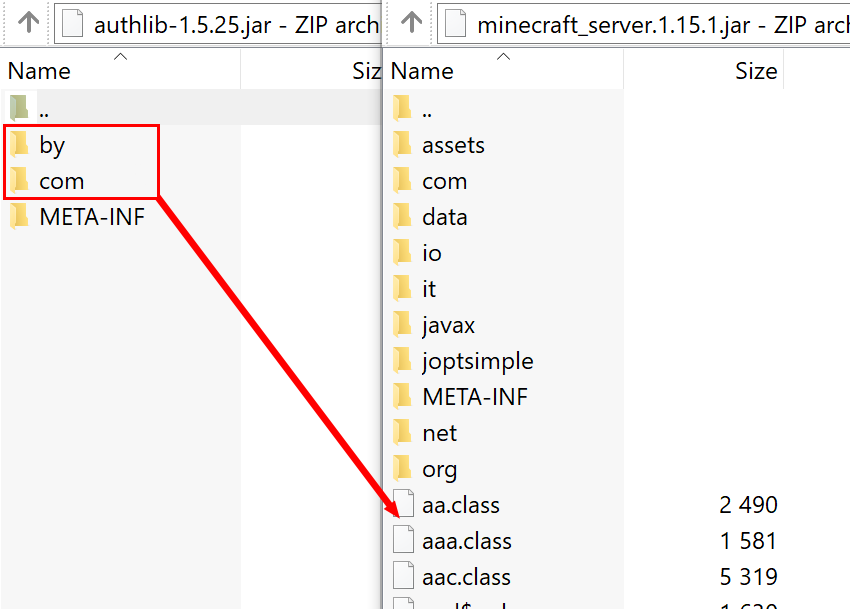
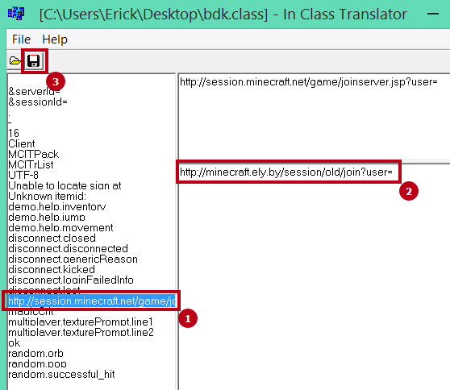

Авторизация для Minecraft¶
Здесь приведена информация по авторизации для лаунчеров и серверов Minecraft через сервис авторизации Ely.by.
Протокол авторизации реализован максимально похожим на оригинальный протокол авторизации Mojang, но тем не менее эта документация описывает все доступные функции конкретно сервиса авторизации Ely.by.
Общие положения¶
Все запросы должны выполняться на URL https://authserver.ely.by.
При успешном запросе, сервер вернёт ответ со статусом 200. Любой другой код свидетельствует об ошибке.
Сервер всегда отвечает JSON данными, кроме случаев системных ошибок и ответов на legacy запросы. Учитывайте это для отображения пользователю правильного сообщения об ошибке.
В случае стандартной ошибки, вы получилите следующие данные:
{ "error": "Краткое описание ошибки", "errorMessage": "Более длинное описание ошибки на английском языке, пригодное для отображения пользователю." }
Предусмотренные ошибки¶
В отличие от оригинального протокола, на Ely применяется меньший зоопарк ошибок:
Ошибка (error) |
Причина |
Решение |
|---|---|---|
IllegalArgumentException |
Вы передали неполный список данных для выполнения запроса. |
Внимательно перепроверьте что вы шлёте в запросе и что указано в документации. |
ForbiddenOperationException |
Пользователь ввёл/разработчик передал неверные значения. |
Необходимо вывести пользователю уведомление о неправильно введённых данных. |
Для индикации ошибки Not Found используется ответ с 404 статусом.
Авторизация в лаунчере¶
В этом разделе описана авторизация для лаунчера или любой другой настольной программы, которой необходимо получить accessToken для игрового клиента Minecraft. Важно понимать, что этот accessToken не имеет ничего общего с accessToken, получаемым при oAuth авторизации - это два абсолютно разных ключа.
Все запросы выполняются на подуровень /auth POST запросом.
-
/auth/authenticate Непосредственная авторизация пользователя, используя его логин (ник или e-mail) и пароль.
- Parameters
username (string) – Никнейм пользователя или его e-mail (более предпочтительно).
password (string) – Пароль пользователя.
clientToken (string) – Уникальный токен лаунчера пользователя.
Успешный ответ:
{ 'accessToken': "Длинная_строка_содержащая_access_token", 'clientToken': "Переданный_в_запросе_client_token", 'availableProfiles': {}, /* См. ниже */ 'selectedProfile': { 'id': "Длинная_строка_с_uuid_пользователя", 'name': "Текущий_nickname_пользователя", 'legacy': false } }
availableProfiles содержит в себе массив с одним элементом, таким же, как и selectedProfile. Добавлено только для соответствия оригинальному протоколу и на деле не используется самими Mojang.
Касательно параметра legacy в selectedProfile в оригинальном протоколе явно не даны пояснения на счёт этого параметра, но сказано, что обычно он в false. Возможно, он как-то используется официальным лаунчером.
-
/auth/refresh Обновляет валидный accessToken. Этот запрос позволяет не хранить на клиенте его пароль, а оперировать только сохранённым значением accessToken для практически бесконечной возможности проходить авторизацию.
- Parameters
accessToken (string) – Уникальный ключ, полученый после авторизации.
clientToken (string) – Уникальный идентификатор клиента, относительно которого получен accessToken.
Note
В оригинальном протоколе так же передаётся значение selectedProfile, но на деле от него мало что зависит и для идентификации пользователя достаточно только этих двух параметров. Наш сервер не обидится, увидив его - он просто его проигнорирует.
В случае получения какой-либо предусмотренной ошибки, следует заново запросить пароль пользователя и произвести обычную авторизацию.
Успешный ответ:
{ 'accessToken': "Новая_длинная_строка_ содержащая_access_token", 'clientToken': "Переданный_в_запросе_client_token", 'selectedProfile': { 'id': "Длинная_строка_с_uuid_пользователя", 'name': "Текущий_nickname_пользователя", 'legacy': false } }
-
/auth/validate Этот запрос позволяет проверить валиден ли указанный accessToken или нет. Этот запрос не обновляет токен и его время жизни, а только позволяет удостовериться, что он ещё действительный.
- Parameters
accessToken (string) – Уникальный ключ, полученый после авторизации.
Успешным ответом будет являться пустое тело. При ошибке будет получен 400 или 401 статус. Пример ответа сервера при отправке истёкшего токена:
{ "error: "ForbiddenOperationException", "errorMessage": "Token expired." }
-
/auth/signout Этот запрос позволяет выполнить инвалидацию всех выданных пользователю токенов.
- Parameters
username (string) – Никнейм пользователя или его e-mail (более предпочтительно).
password (string) – Пароль пользователя.
Успешным ответом будет являться пустое тело. Ориентируйтесь на поле error в теле ответа.
-
/auth/invalidate Запрос позволяет инвалидировать accessToken. В случае, если переданный токен не удастся найти в хранилище токенов, ошибка не будет сгенерирована и вы получите успешный ответ.
Входные параметры:
- Parameters
accessToken (string) – Уникальный ключ, полученый после авторизации.
clientToken (string) – Уникальный идентификатор клиента, относительно которого получен accessToken.
Успешным ответом будет являться пустое тело. Ориентируйтесь на поле error в теле ответа.
Авторизация на сервере¶
Эти запросы выполняются непосредственно клиентом и сервером при помощи внутреннего кода или библиотеки authlib (начиная с версии 1.7.2). Они актуальны только в том случае, если вы уже произвели авторизацию и запустили игру с валидным accessToken. Вам остаётся только заменить пути внутри игры/библиотеки на привидённые ниже пути.
Поскольку непосредственно изменить что-либо в работе authlib или игры вы не можете, здесь не приводятся передаваемые значения и ответы сервера. При необходимости вы сможете найти эту информацию самостоятельно в интернете.
Через authlib¶
Important
Эта часть документации описывает запросы, выполняемые через authlib в версии игры 1.7.2+. Для более старых версий смотрите раздел ниже.
Все запросы из этой категории выполняются на подуровень /session. Перед каждым из запросов указан тип отправляемого запроса.
-
POST /session/join Запрос на этот URL производится клиентом в момент подключения к серверу с online-mode=true.
-
GET /session/hasJoined Запрос на этот URL выполняет сервер с online-mode=true после того, как клиент, пытающийся к нему подключится, успешно выполнит join запрос.
Attention
Внутри тела ответа есть параметр properties, который, в свою очередь, содержит поле value с закодированной в ней base64 строкой. В оригинальной системе авторизации данные зашифрованы с помощью приватного ключа и расшифровывались на клиенте с помощью публичного.
Ely, в свою очередь, не выполняет шифрацию вовсе, поэтому вам необходимо отключить проверку подписи в библиотеке authlib. В противном случае текстуры всегда будут признаваться невалидными.
Для старых версий¶
Important
Эта часть документации описывает запросы, выполняемые более старыми версиями Minecraft, когда не применялась библиотека authlib. Это все версии, младше версии 1.7.2.
Все запросы из этой категории выполняются на подуровень /session/legacy. Перед каждым из запросов указан тип отправляемого запроса.
Принцип обработки этих запросов такой же, как и для authlib, отличие только во входных параметрах и возвращаемых значения.
-
GET /session/legacy/join Запрос на этот URL производится клиентом в момент подключения к серверу с online-mode=true.
-
GET /session/legacy/hasJoined Запрос на этот URL выполняет сервер с online-mode=true после того, как клиент, пытающийся к нему подключится, успешно выполнит join запрос.
Важно не потерять GET параметр ?user= в конце обоих запросов, чтобы получились следующие URL:
http://minecraft.ely.by/session/legacy/hasJoined?user=.
Одиночная игра¶
По сути, одиночная игра - это локальный сервер, созданный для одного игрока. По крайней мере это так, начиная с версии 1.6, в которой и был представлен механизм локальных серверов.
Тем не менее, описанный ниже запрос актуален только для Minecraft 1.7.6+, когда для загрузки скинов стала использоваться так же authlib.
-
GET /session/profile/{uuid} Запрос на этот URL выполняется клиентом в одиночной игре на локальном сервере (созданном посредством самой игры). В URL передаётся UUID пользователя, с которым был запущен клиент, а в ответ получается информация о текстурах игрока в таком же формате, как и при hasJoined запросе.
Готовые библиотеки authlib¶
Поскольку самостоятельная реализация связана с трудностями поиска исходников, подключения зависимостей и в конце-концов с процессом компиляции, на странице загрузок нашей системы скинов вы можете загрузить уже готовые библиотеки со всеми необходимыми изменениями. Выберите в выпадающем списке необходимую версию и следуйте инструкции по установке, размещённой на той же странице ниже.
В более ранних версиях игры система скинов находилась внутри игрового клиента, так что библиотеки ниже обеспечивают лишь авторизацию:
Minecraft 1.7.5 -
authlib 1.3.1Minecraft 1.7.2 -
authlib 1.3
Для установки вам необходимо заменить оригинальную библиотеку, располагающуюся по пути
<директория установки minecraft>/libraries/com/mojang/authlib/. Убедитесь в том, что версии скачанного и заменяемого
файлов совпадают.
Установка authlib на сервер¶
Соответствующие изменения должны быть также применены и к серверу. Для этого вам понадобится файл сервера с расширением .jar. Откройте этот файл в любом удобном архиваторе. Затем точно также откройте архив с authlib, соответствующей версии игры, для которой ваш сервер.
Перед вами будет 2 окна: одно с файлами сервера, другое с файлами authlib. Вам необходимо перетащить только папки “com” и “by” из authlib в сервер и подтвердить замену.

Обратите внимание: “перетягивать” папки нужно ниже папок сервера (в область файлов .class).¶
После этих действий вы можете закрыть оба окна и в настройках сервера установить значение online-mode=true.
Hint
Некоторые сервера запускаются как обёртка над оригинальным сервером Minecraft (например, Forge и Sponge). В этом случае модификацию нужно производить именно в оригинальном сервере, а не обёртке.
Для серверов, работающих через BungeeCord, установку необходимо производить только на сервер, выполняющим роль авторизационного.
Установка на версии ниже 1.7.2¶
Для более старых версий существует достаточно большое многообразие различных случаев, раскрыть которые в этой документации не представляется возможным. Вся установка заключается в замене определённых строк в определённых классах через InClassTranslator.
На форуме RuBukkit есть отличный пост, в котором собрана вся нужна информация по именам классов на различных версиях Minecraft. Переписывать его сюда не имеет смысла, так что просто перейдите на его страницу и найдите нужную версию.
RuBukkit - Список классов и клиентов для MCP.
Пример установки¶
Предположим, что вы хотите установить авторизацию на сервер версии 1.5.2.
Сначала вы переходите по вышепривидённой ссылке, выбираете нужную версию (1.5.2) и видите список классов:
bdk.class - путь до joinserver
jg.class - путь до checkserver
Затем вы должны взять .jar файл клиента и открыть его любым архиватором. После чего вам необходимо найти файл bdk.class. Для этого удобно воспользоваться поиском.
После того, как вы нашли файл, его нужно извлечь из архива - просто перетащите его оттуда в удобную для вас дирикторию.
Дальше запустите InClassTranslator и в нём откройте этот класс. Слева будет список найденных в файле строк, которые вы можете изменить. Нужно заменить только строку, отвечающую за запрос на подключение к серверу:

После этого вам нужно положить изменённый .class обратно в .jar файл игры.
Ту же самую операцию вам необходимо провести и с сервером, только заменить ссылку на hasJoined.
После этих действий вам нужно в настройках включить online-mode=true и сервер станет пускать на себя только тех игроков, которые будут авторизованы через Ely.by.